This includes a shortened version of my Capstone project, which can be viewed
here.
GrowOpSim
Details
This is a prototype game which has a working title of GrowOpSim. I would like to further develop this game, but I have not looked for a team or found the time to develop it. I wrote this entirely in Unreal Blueprints. The source files can be found here, along with the zipped game under "Releases" on the right. The main gameplay is growing and selling plants, while upgrading your stuff, like pots and seeds. When I started this project, there wasn't many realistic growing games, so I felt the need to fill that space. This still does get occcasional updates, but releases are much rarer.
Rigged and Animated Alien
Details
This is a 3D model I was given to set up a skeleton and manually rig with HumanIK. I then skinned the skeleton, and animated the model for the final project of a class. This was done entirely in Maya. The are no source files, but the animations that I created are to the right.


Phone Model and Animation
Details
This is a phone model and animation I made for a college course. It was made at the beginning of my college career in 3DS Max. It was then refined and polished for the capstone course of my degree. During the capstone, I also decided it was necessary to be able to import it into a game engine. I found that it was very simple to export and import the project into Unreal Engine. I also used ffmpeg to convert the image sequence to a video. I then used it to convert the video to a GIF for this website. The source files are available here, and all files can be downloaded under Releases on the right.
Reflection
I learned how to model with reference images. I was able to take 2D shapes and create a 3D model. I also learned how to use 3DS Max more efficiently. There are, like other professional software, many shortcuts to save time. I also learned how to import assets into Unreal. I discovered that many softwares can export to .fbx files, and Unreal can import those files. There's also lots of settings to make sure you only import what you need.
The main challenge I faced was cleaning up the model. I needed to get rid of a lot of unnecessary vertices, but I couldn't find an easy way to do that. I decided to manually remove the vertices, and add back some edges to make the faces transition more smoothly. Finally, I learned how to use ffmpeg to convert between image and video file types. I went from an image sequence to a video, and then from a video to a GIF to avoid embedding the video.
The model's main improvement was its animation. It's now much more detailed, and includes movement on the phone buttons. Any button can move, but I have it type 911. The models were also slightly improved. Like I said, I removed a ton of vertices, and the handset now has speaker and microphone holes. I also changed the smoothing on the model.
Examples

 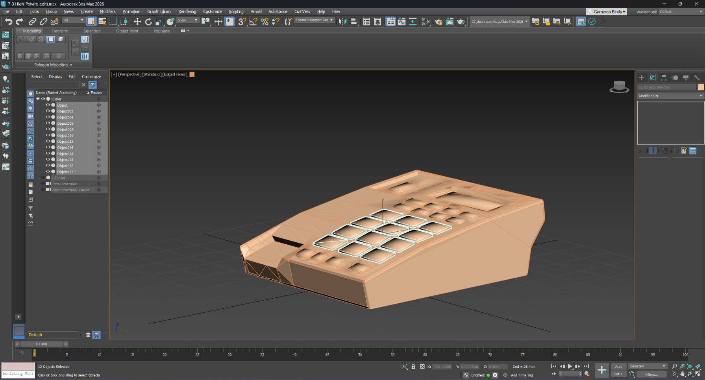
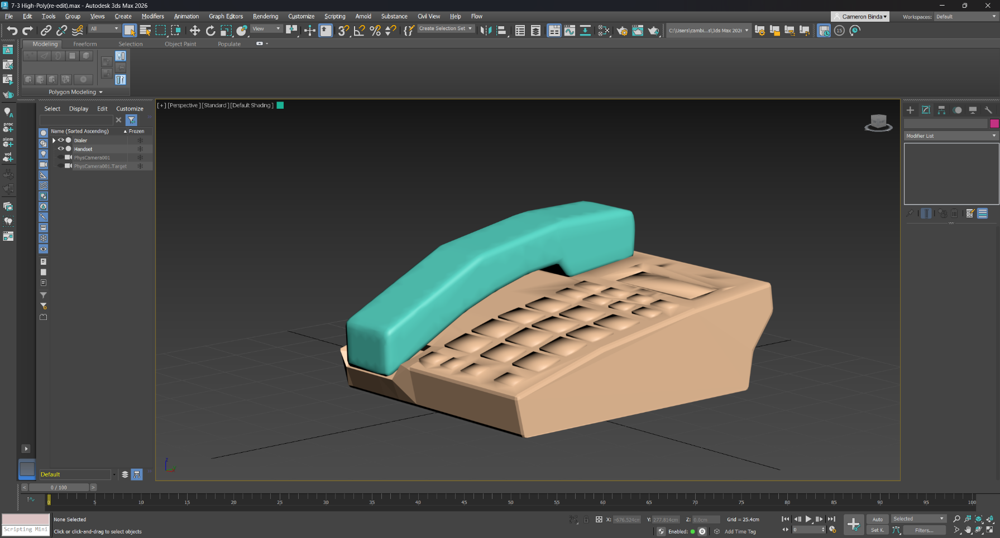
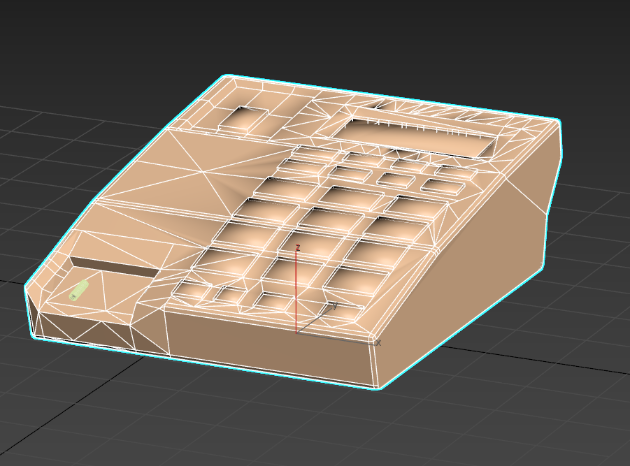
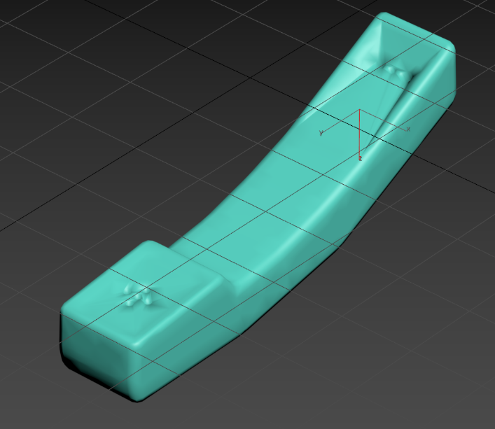
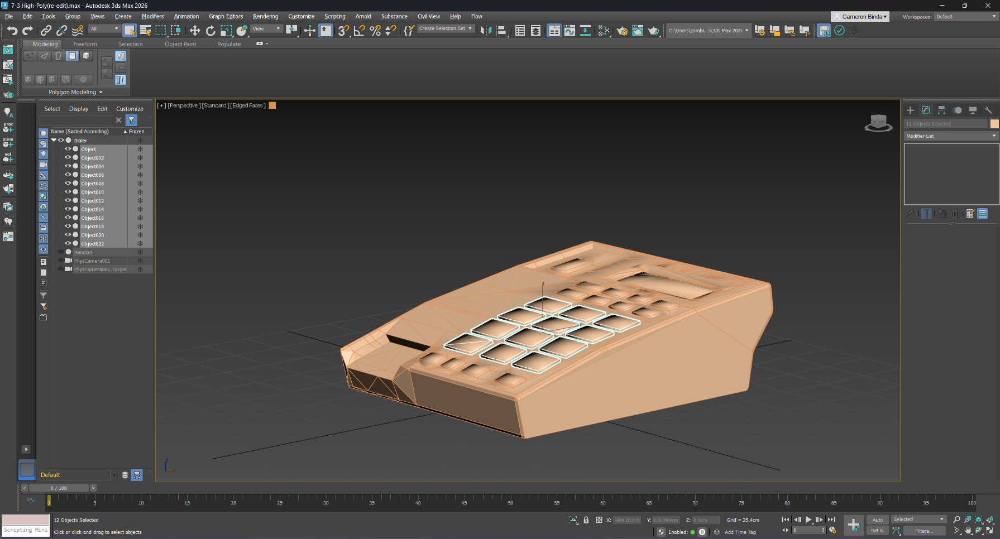
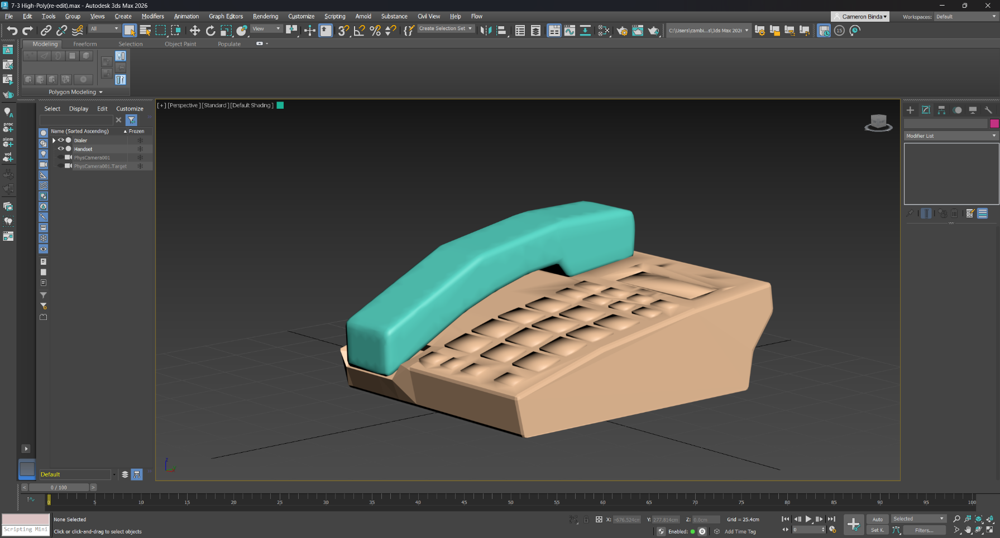
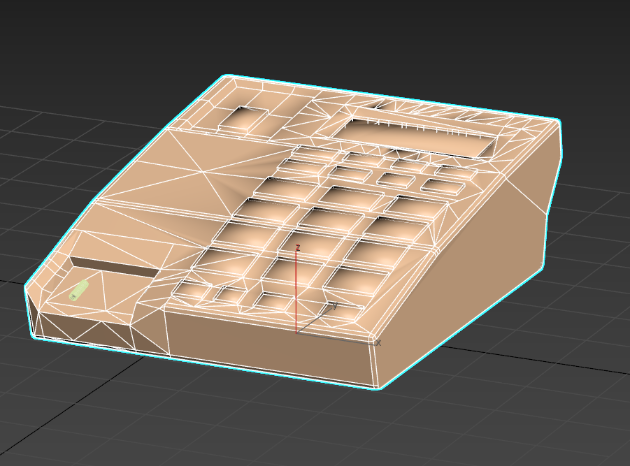
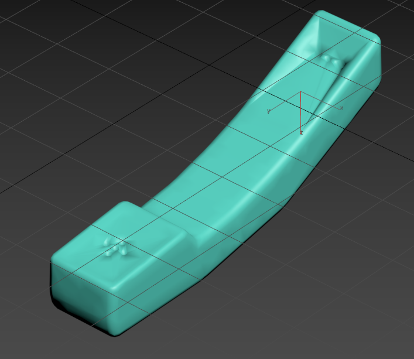
Metallic Dectective: Treasure Hunter
Details
This is a game prototype called Metallic Detective: Treasure Hunter. It was made at the beginning of my college career, and was then refined and polished for the capstone course of my degree. It was originally made in Unreal 4, and then upgraded to Unreal 5. In the game, players dig up and collect treasures within a time limit. There's a metal detector that has visual and audio output. The source files are available here, and playable files are under Releases on the right.
Reflection
Without following an exact guide, there was a lot learning in Unreal. I had to learn a lot about Blueprints in the class, and reuse or modify those concepts for the requirements of the game. During the capstone, I learned a little about upgrading from Unreal 4 to 5. For a blueprint project, there is some code that needs to be changed. This was a challenge I faced, but all I needed was to do was delete some VR code.
The main challenge was trying to fix my destructible objects. Unreal 4 used Apex for destructible objects, while Unreal 5 uses Chaos. I had to learn how to use the new geometry collection system, which basically required me to replace the static mesh with a geometry collection in runtime. I also had to learn how to create geometry collections from existing meshes, which is done in fracture mode.
The game's main improvement was the metal detector. It now has visual and audio feedback instead of light over the diggable spots. There's a bar that goes down and the beeps get faster as the player gets closer. The level also looks a lot nicer, as I used the foliage mode with custom meshes to randomly place trees and grass. There is also now a start screen, and pause screen on top of the end screen, with options to restart, quit, or continue, depending on which one.
Examples
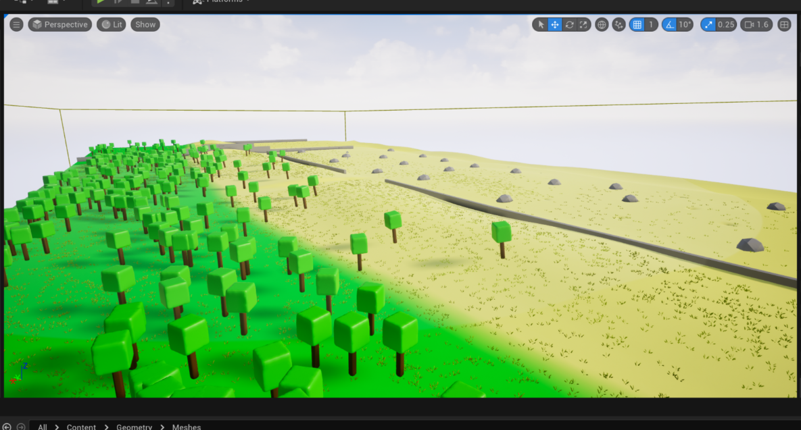 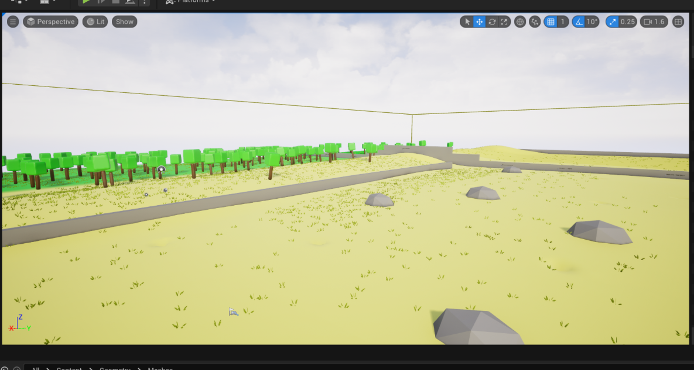
Development
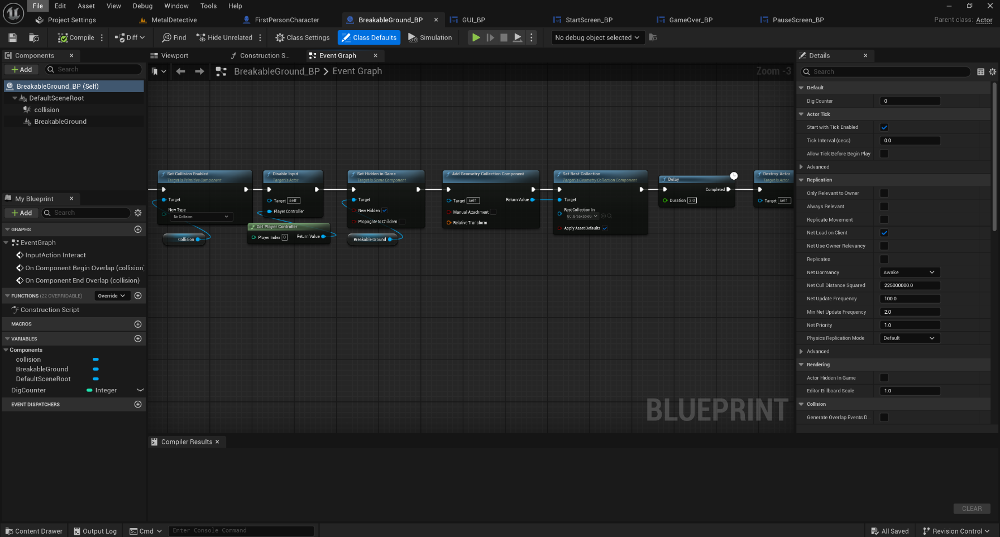 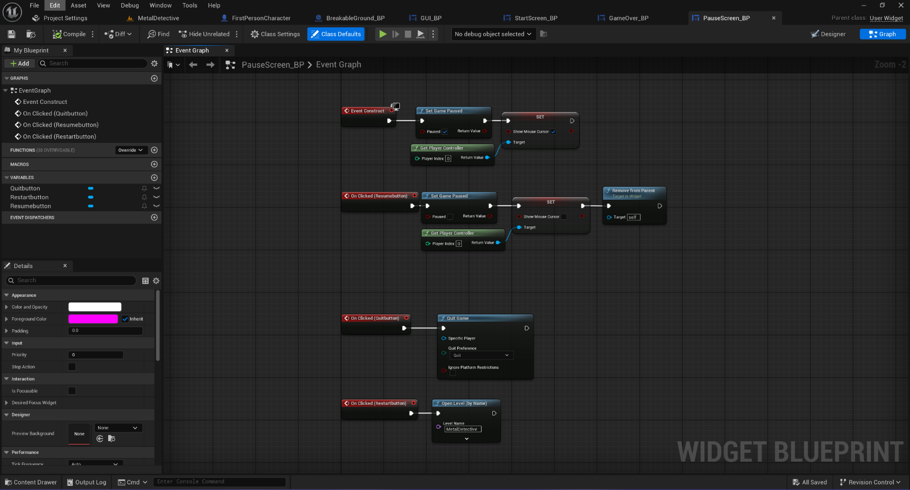
Survival Prototype
Details
This is a game survival game prototype. It was made later in my college career, and then refined and polished for the capstone of my degree. It was made entirely in Unreal 5, with a mix of C++ and Blueprint classes. There are objectives for collecting resources and building. There are also basic enemies that wander, and chase and attack the player when seen or touched. The player can also hit them to kill them. The source files are available here, and playable files are under Releases on the right.
Reflection
One thing I learned was how to create objectives for the player. This was something I wasn't sure how to tackle, but now I have a better idea. I also learned more about modeling and texturing in Unreal. Using the modelling mode, I created trees, rocks, and bushes, which served as the resources for the game. I also learned a simple way to apply different materials to different parts of objects. Finally, I learned how to create a navigation mesh, and how to use that for the AI. During the capstone, I learned how to use behavior trees and how to program for that. In a personal project, I also wanted AI, so I taught myself there before taking on this feature. I also learned how to use actors in the foliage mode. Unreal has a way to convert actors to foliage actors, so that their code still runs. This also allowed to use foliage mode to randomly place resources with a sort of painting tool. One final thing I learned was how to use the default animations on custom characters. It just requires either a small code or setting change.
The main challenge I faced was upgrading the project to Unreal 5.5 from 5.2. Since there's a built-in upgrade tool, I thought I would be fine. However, I found that there were a lot of errors coming up in the conversion process, and there was an option to open Visual Studio. It gave me a hint that the .cs files had wrong include versions, and I found the problem. I thought I fixed it, but when I tried to upgrade again, I got the same errors. I eventually realized that it was making a new copy every time I upgraded the project, so I had to change the files, and just open from the new folder that I was actually changing. Another challenge I had was with the AI. They would chase the player, but stop every time they reached the destination they decided the player was at. I realized this was because I had them navigating to the player's location, not the player actor. I changed the service that found the player to just return the player actor object instead of a vector, and now they follow without stopping. Finally, another challenge that I decided to work around was C++ decorators, services, and tasks. I couldn't, at the time, figure how I would cast to blueprint classes (the AI) from C++ code. I later learned I could probably use Blueprint Implementable Events.
Most of the improvements were related to the AI enemies. They originally wandered, but on top of that, they now have animations, and can sense the player, chase them, and attack them when in range. The player can also attack the enemies. I also expanded the map, changed the resource availability, and added better materials to the structures. By using the foliage mode to place actors, I may have also improved performance a little, although it wasn't really a problem. It was also given a start screen, pause screen, and end screen, like the other artifacts.
Examples
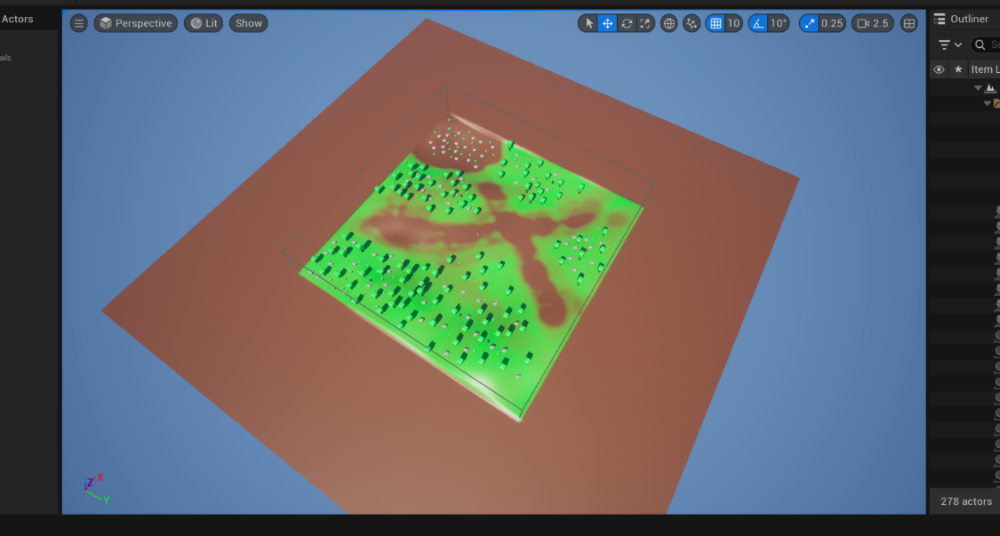 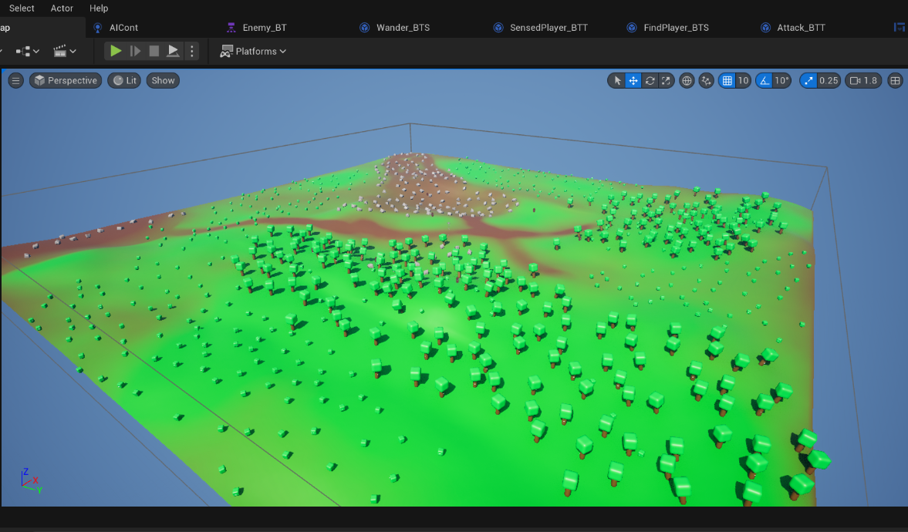
Development
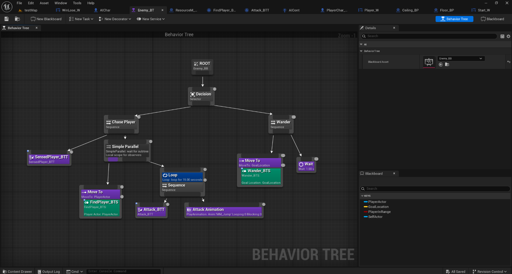 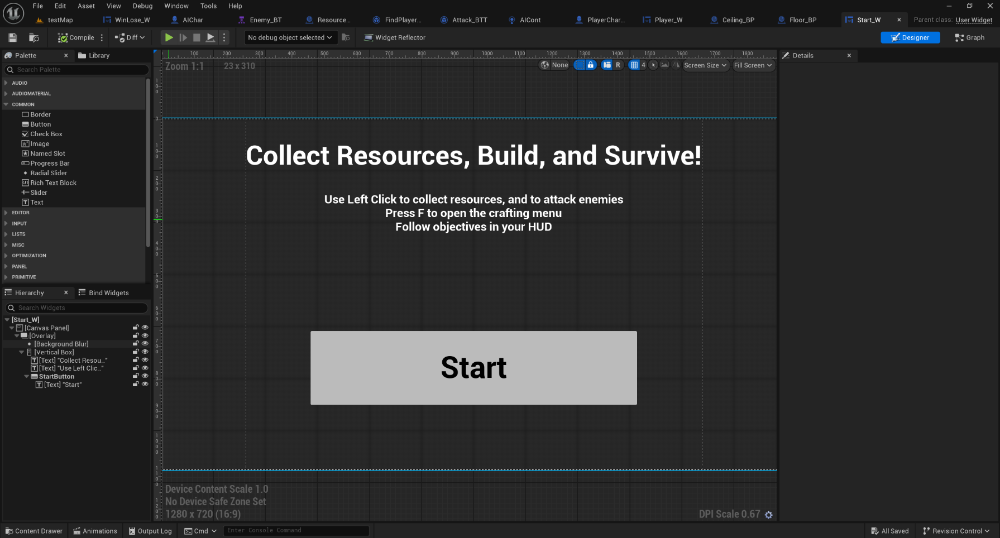
Parkour Prototype
Details
This is a parkour game prototype. It was made later in my college career, and then refined and polished for the capstone of my degree. It was made entirely in Unreal 5, with a mix of C++ and Blueprint classes. The player can move jump, and place platforms off of other ones with a gun. There are also portals that "catch" the player and teleport them back. These portals also allow you to see the level from above. Finally, there are jump boosts to jump higher, and bounce pads that launch the player. The source files are available here, and playable files are under Releases on the right.
Reflection
While creating the project, I learned a lot about graphics. I learned about dynamic materials, which can change in runtime. I also learned about particle effects, which add a lot of life to the game. They were used for the gun. Another thing I learned was how to make procedural meshes. This was used a terrain and could be modified by the gun. During the capstone, one thing I learned was how laggy scene captures (cameras) can be. Having 20 if them in the level just freezes the editor, but I also learned how to mitigate it. I just used the portal's variable for the player camera location, and had it disable its scene capture when the player was far enough away. This had the added benefit of acutally changing the scene capture when the player moved. I also have learned more about git through losing and recovering my files. I specifically learned how to go "back in time" in git, and modify a commit, with the reset and ammend commands.
I kind of already talked about challenges, but the main one was the lag from the scene captures. My attempt during refinement didn't work correctly, so I removed it and tried again during polish. I was only able to get it to work because I realized the portals already somehow had the player's location, and I just had to find it. The other main challenge was losing my files, which has not been overcome yet. I accidentally left the packaged project in the files, which was too big to be uploaded. In trying to remove those files, I lost a bunch, although they were still recoverable. I eventually learned about the ammend command, which changes a commit based on the current working tree. I reset to after my polish commit, used reset to untrack the PackagedBuilds folder, and then used commit --ammend to change the commit. My next challenge was getting the platforms to spawn when the gun's projectile hits something. I realized from past experience that I can make a UPROPERTY that could be set in the Blueprint for that C++ class, avoiding the need to create another C++ class. I discovered that the spawned platforms would have to be actors, and not just meshes, though.
The game was improved by making an entire game concept out of the features I already created. I realized that the portals would be an interesting way to checkpoint the player through a basic parkour level, since a player could see the level from above, but a little behind. I also thought that the parkour should have some other features, so I decided to include jump boosts, bounce pads, and the platform gun. It was also given a start screen, pause screen, and end screen, like the other artifacts.
Examples
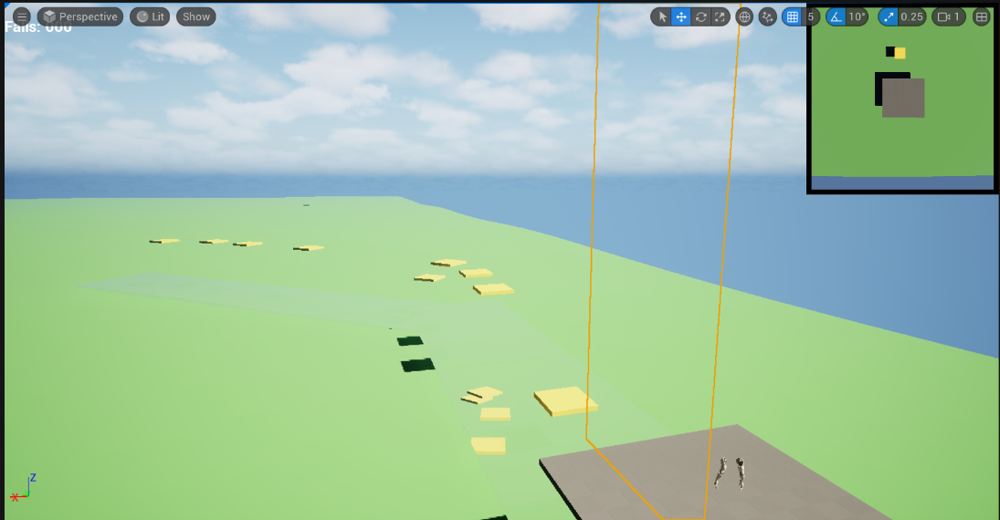 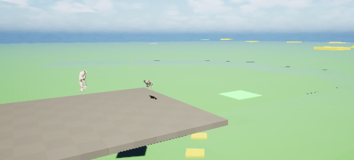 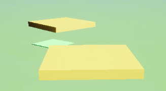
Development
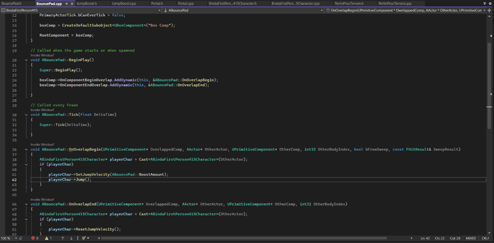 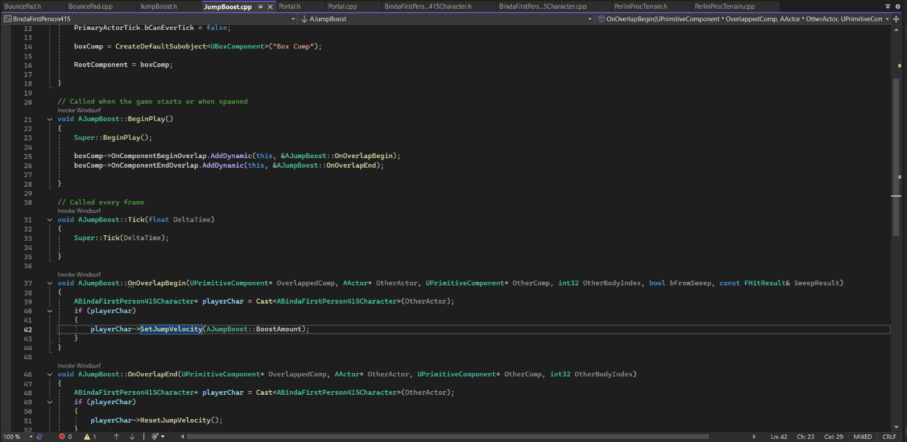